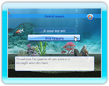
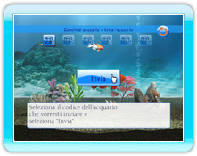

15 |
Modalità condividi acquario |
 |
|
Seleziona "condividi acquario" dal menu principale per accedere alla modalità condividi acquario. Puoi vedere gli acquari che hai ricevuto dagli amici ed anche inviare i tuoi acquari agli amici.
Una lista degli acquari che hai ricevuto dai tuoi amici Wii è visualizzata nella posta in arrivo del gioco. Seleziona e conferma l'acquario che desideri vedere da questa lista.
 Viene visualizzata una lista di tutti gli amici Wii presenti nella tua rubrica Wii. Seleziona un amico a cui inviare un acquario e poi conferma.
Seleziona il numero che corrisponde all'acquario che desideri inviare e premi "Invia" per mandarlo.
|
 |
 |
 |